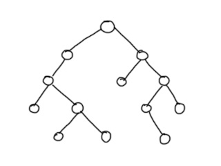
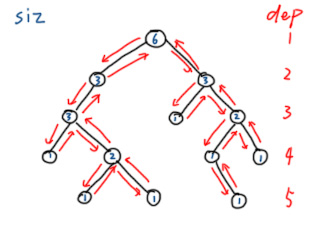
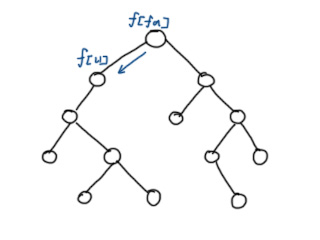
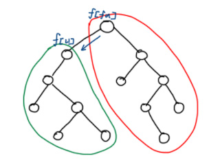

Dynamic Programming with Root Replacement
Last updated on March 15, 2024 pm
$$
\Large\textbf{换根}\large\texttt{DP}
$$
知识前置
树
无环联通图，有唯一一个前驱。
涉及换根DP问题的一般是无根树。
定义
树形DP中的换根DP问题又被称为二次扫描，通常不会指定根结点，并且根结点的变化会对例如子结点深度和、点权和等一些值产生影响。
通常需要两次DFS，第一次DFS预处理诸如深度，点权和之类的信息，第二次DFS开始运行换根动态规划。
题目特征
一般基于树上的问题或能转化成树上问题的，离线的且解法确定的，且需对每一个点作为根节点求解，时空复杂度在$1\times10^7$以内的可以考虑使用换根DP求解。
同时，允许一个节点的状态从相邻节点转移。
一般思路
以这样一棵树为例。

首先，任选一个节点作为根节点，使用DFS遍历整棵树并处理出下一步换根所需要的相关数据，同时对根节点求解。这里以常见的深度和子树大小为例。

接下来，从根节点开始顺序遍历，用父节点更新子节点的答案。

一般地，从父节点转移到字结点后，答案的更改可在子树内和子树外分别讨论。通常子树内一套、子树外一套，如图所示。例如计算$dep$和，子树内全部减$1$，而子树外全部加$1$。

换根DP的一般思路：
首先跑一遍DFS，由叶子结点向上，更新状态转移所需信息。再跑一边DFS，由根节点向下，计算每个节点作为根节点的答案。
伪代码
1 | |
Dynamic Programming with Root Replacement
https://algo-x.cn/2024/03/15/Dynamic-Programming-with-Root-Replacement/